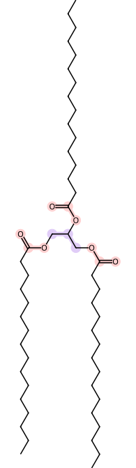

Los triacilgliceroles (triglicéridos) son ésteres del glicerol con tres ácidos grasos. Al esterificarse los tres hidroxilos desaparecen los grupos polares del glicerol: son moléculas apolares, insolubles en agua, que no forman bicapas como los fosfolípidos. Se almacenan en el citoplasma como gotas lipídicas, un núcleo de lípidos neutros rodeado por una monocapa de fosfolípidos, que en los adipocitos ocupan casi toda la célula.
Son la principal reserva de energía del organismo: sus cadenas están muy reducidas, y su oxidación rinde más del doble de energía por gramo que la de los glúcidos o las proteínas. Además, por ser apolares se almacenan sin agua, mientras que el glucógeno se guarda hidratado.
Los tres carbonos del glicerol se numeran de forma estereoespecífica (sn): con el glicerol en proyección de Fischer y el hidroxilo de C2 a la izquierda, el carbono de arriba es sn-1. Los triacilgliceroles simples llevan el mismo ácido graso en las tres posiciones; los naturales son casi siempre mixtos, y cada grasa tiene una distribución característica de ácidos grasos en cada posición. La proporción de cadenas saturadas e insaturadas decide si es sólida (grasa) o líquida (aceite) a temperatura ambiente (véase Ácidos grasos).
Elige un triacilglicerol en el desplegable. Los modelos están a la misma escala que los de los fosfolípidos, con el glicerol arriba y las tres cadenas hacia abajo. Regiones colorea el glicerol, los grupos éster y las cadenas, con los mismos colores que la fórmula; Dobles enlaces marca en verde los carbonos de los dobles enlaces; Posiciones sn rotula los carbonos del glicerol y los rodea de un halo dorado.

En la fórmula, la cadena de sn-2 se dibuja hacia arriba para que no se cruce con las otras dos.
Triacilglicerol simple, con tres cadenas de palmitato (16:0), el producto principal de la síntesis de ácidos grasos. Las cadenas saturadas son rectas y se empaquetan de forma compacta, como en las grasas sólidas a temperatura ambiente.
Cada molécula se construyó con las tres cadenas extendidas y paralelas, con el codo de cada doble enlace cis; los ángulos de giro del glicerol y de los ésteres se ajustaron por búsqueda aleatoria, y la energía se minimizó con el campo de fuerzas MMFF94 y un dieléctrico dependiente de la distancia. Son modelos idealizados de una conformación posible de la molécula aislada: en una gota lipídica o en un cristal de grasa, las cadenas adoptan otras disposiciones (por ejemplo, en diapasón o en silla). Las fórmulas se han dibujado a partir de los mismos modelos.
Notación: ácidos grasos en sn-1/sn-2/sn-3 (P, palmitato; S, estearato; O, oleato; L, linoleato) y número de carbonos:dobles enlaces.